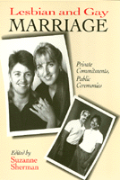

<body bgcolor="#FFFFFF" text="#000000" link="#0000FF" vlink="#CC0000" alink="#CC0000"><center><hr width="350" size="1" align="center" noshade>Personal narratives explore the issue of marriage for lesbian and gay couples in America<hr width="350" size="1" align="center" noshade><p><a href="https://cdcshoppingcart.uchicago.edu/Cart/ChicagoBook.aspx?ISBN=9780877229742&&PRESS=temple" target="_top">Buy this book!</a> | <a href="https://cdcshoppingcart.uchicago.edu/Cart/Cart.aspx?PRESS=temple" target="_top">View Cart</a> | <a href="https://cdcshoppingcart.uchicago.edu/Cart/Cart.aspx?PRESS=temple" target="_top">Check Out</a></p><p></p></center><!--none//--><h1>Lesbian And Gay Marriage</h1>
<H2>Private Commitments, Public Ceremonies</H2>
<h3>edited by Suzanne Sherman</h3>
<P>cloth 0-87722-974-0 $34.95, Oct 92, <FONT COLOR=#990033>Out of Print</FONT>
<br>paper 0-87722-975-9 $22.95, Oct 92, <FONT COLOR=#990033>Out of Stock Unavailable</FONT>
<BR> 288 pp
6x9
36&nbsp;halftones
</P><BLOCKQUOTE><I>"...provides a subtle and complex documentation of the many things marriage means in our society&#151especially...to couples who do not stand to benefit from the privileges it confers to heterosexuals."</I>
<br>&#151<b><I>The Women's Review of Books</I></b><I></I></BLOCKQUOTE>
<p>This collection of personal narratives explores the hotly debated issue of same-sex marriages. The twenty-four interviews with lesbians and gays who have celebrated wedding ceremonies as well as couples who remain unmarried or choose not to marry reveal the qualities that bind people in lifetime partnerships as well as the everyday tensions of committed relationships. Most of the interviews are accompanied by personal snapshots. The couples come from many regions of the United States and from diverse ethnic and class backgrounds. They include such prominent activists as Harry Hay, Phyllis Lyon, and Del Martin.
<p>These intimately described relationships are as new as three years and as enduring as thirty-eight. Each dialogue grapples with the reactions of family and friends to the couple's commitment and the everyday struggles of their own relationship. The interviews are preceded by essays by Thomas Stoddard and Paula Ettelbrick that offer opposing viewpoints on marriage. The book closes with a section of personal observations by ceremony officiators from a variety of religions&#151from Catholic priests to a Wiccan high priestess&#151and a resource directory.
<p>Although viewed by some lesbians and gays as an "abhorrent ritual" of patriarchy and by others as a "celebration of commitment," marriage is more than a relationship sanctioned by law; it is the centerpiece of the social structure and the core of the traditional notion of family.
<p>Why, then, are loving couples who jointly own homes faced with the cruel enigma that "legally, we are strangers"?
<BR>&nbsp;<h2>Excerpt</h2><P>Excerpt available at <a href="http://www.temple.edu/tempress">www.temple.edu/tempress</a></p>
<BR>&nbsp;<h2>Reviews</h2>
<p><I>"A series of clear and intimate portraits of gay and lesbian couples.... </I>Lesbian and Gay Marriage<I> makes a timely contribution.... It presents a true picture of the nature of family and the diversity which is the heart of America.</I>
<br>&#151<b><I>Lambda Book Report</I></b>
<BR>&nbsp;<h2>Contents</h2><P>
<p>Acknowledgments
<br>Introduction
<p><b>Part I: The Marriage Debate</b>
<br>1. Why Gay People Should Seek the Right to Marry &#150 Thomas B. Stoddard
<br>2. Since When is Marriage a Path to Liberation? &#$150 Paula L. Ettelbrick
<p><b>Part II: Private Commitments</b>
<br>3. Patt Denning and Kathie Cinnater
<br>4. Dennis W. Weber and Kelvin Ray Beliele
<br>5. Phyllis Lyon and Del Martin
<br>6. Tede Matthews and Chuck Barragan
<br>7. Reid and John
<br>8. Gil Manaoang and Juan Lombard
<br>9. Stevie Bryant and Demian
<br>10. Margrete and Robin
<br>11. Harry Hay and John Burnside
<p><b>Part III: Public Ceremonies</b>
<br>12. Brian Binder and David Craig
<br>13. Nina Kaiser, Nora Klimist, and Kellen Kaiser-Klimist
<br>14. Thomas F. Coleman and Michael A. Vasquez
<br>15. Ed Swaya and Randy Fitzgerald
<br>16. Mollie and Morgan Sidhe
<br>17. Terry Tibbetts and Don Wright
<br>18. Diane Bernstein and Andrea Yates
<br>19. Alvin Hukins and Darryl Fenley
<br>20. Ruth Mahaney and Nina Jo Smith
<br>21. Demetri Williams and Dwain Ferguson
<br>22. Frances Fuchs and Gayle Remick
<br>23. Ted Gaiser and Chuck Hornberger
<br>24. Pat and Karen Norman
<br>25. Todd and Jonathan Barr-Sawyer
<br>26. Pik Work and Mary Provost
<p><b>Part IV: Ceremony Officiators</b>
<br>27. Father Robert L. Arpin
<br>28. Father James Mallon
<br>29. The Reverend Dee Dale
<br>30. The Reverend Jeanne MacKenzie
<br>31. Rabbi Denise L. Eger
<br>32. The Reverend Jim Lowder
<br>33. Wiccen High Priestess Zsuzsanna Budapest
<p>Resource Directory
</P><BR>&nbsp;<H2>About the Author(s)</H2>
<table><tr><td valign="top"><img src="/tempress/authors/894_au.gif" height="90" width="75"></td><td width="100%" valign="middle"><p><b>Suzanne Sherman</b> is an editor, freelance writer, and creative writing instructor. She lives in the Bay Area with her partner. No&#151she hasn't been married.</P></td></tr></table>
<BR><H2>Subject Categories</H2>
<p><A HREF="/tempress/sexual.html" TARGET="_top">Sexuality Studies/Sexual Identity</a>
</p>
<p align="center"><a href="https://cdcshoppingcart.uchicago.edu/Cart/ChicagoBook.aspx?ISBN=9780877229742&&PRESS=temple" target="_top">Buy this book!</a> | <a href="https://cdcshoppingcart.uchicago.edu/Cart/Cart.aspx?PRESS=temple" target="_top">View Cart</a> | <a href="https://cdcshoppingcart.uchicago.edu/Cart/Cart.aspx?PRESS=temple" target="_top">Check Out</a></p><p><font face="Arial" size="1"><a href="copyright.html" onMouseOver="window.status='Web Copyright Policy';return true;" onMouseOut="window.status=''" title="Web Copyright Policy">&copy;</a> 2015 <a href="http://www.temple.edu" target="new" onMouseOver="window.status='Link to Temple University home page';return true;" onMouseOut="window.status=''" title="Link to Temple University home page">Temple University</a>. All Rights Reserved. http://www.temple.edu/tempress/titles/894_reg.html</font></p>